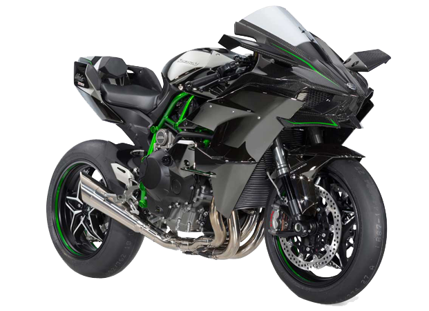

La firma de Akashi dispone de una de las motos más potentes y sofisticadas del momento,
fruto de la tecnología aprovechada por otras áreas de la empresa: 300 CV y turbo para la versión de circuito lo dejan claro.
Creada para ser la máxima expresión en prestaciones en una motocicleta, la Ninja H2R es una moto con un motor con compresor.
Nacida de la cooperación de varias divisiones del grupo KHI la Ninja H2R incorpora lo último en tecnología de motores y chasis,
materiales y prestaciones, toda una pieza de artesanía tecnológica llamada a ser un icono dentro del mundo del motociclismo.
Esta superbike de 1.000 centímetros cúbicos y 207 caballos de potencia, entregados por su motor de cuatro cilindros, es la única
moto de serie que cuenta actualmente con un supercargador o sobrealimentador, un desarrollo tecnológico que le permite
a quien la conduzca sentir la mejor experiencia de aceleración.
Nota: "Esta moto no está homologada para circular por la calle para su uso en carretera abierta."
Aqui una pequeña demostracion de su velocidad "400 kh"